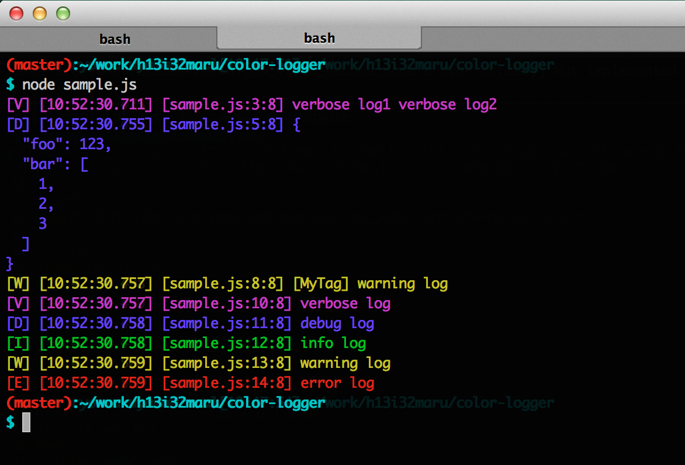

Color Logger
colorful logger for node.
npm install color-logger
Example
import Logger from 'color-logger';
// simple usage
Logger.v('verbose log1', 'verbose log2');
// use object
Logger.d({foo: 123, bar: [1, 2, 3]});
// use tag
let logger = new Logger('MyTag');
logger.w('warning log');
// all log level and colors
Logger.v('verbose log');
Logger.d('debug log');
Logger.i('info log');
Logger.w('warning log');
Logger.e('error log');

API Reference
https://h13i32maru.github.io/color-logger/
License
MIT